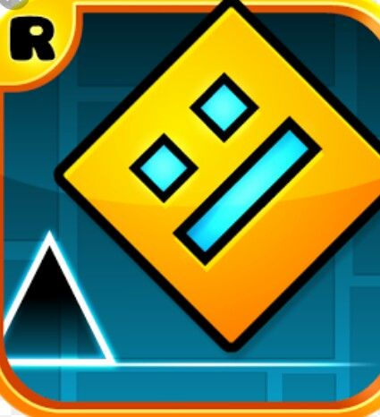

Версия 2.207 (выпущена 8 ноября 2024 года)
- Событийные уровни и сундуки, связанные с текущими событиями
- Новые достижения и награды для игроков
- Новая опция триггера песен для гибкой настройки музыки
- Исправления ошибок и оптимизация производительности

Это не просто "тапалка" — это стиль, челлендж и мощь!
«Только сильные проходят LIMBO»
Источник: официальные страницы и игровые сообщества